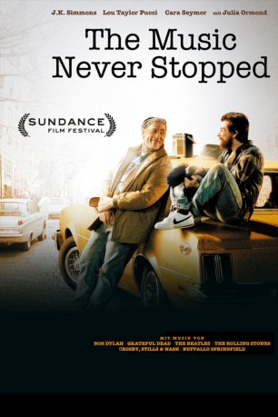
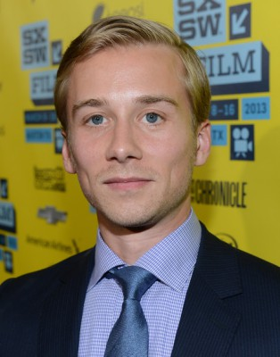
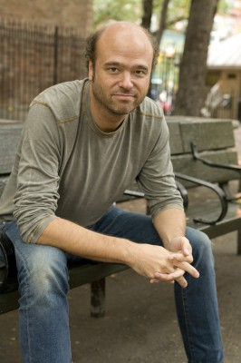
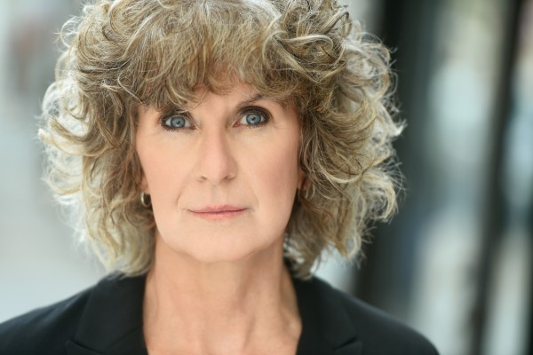

#2038 The Music Never Stopped
 
 IMDB-Wertung: 7.6 / 10
IMDB-Wertung: 7.6 / 10  Metascore: 60
Metascore: 60 
Nachdem ihm sein Vater Henry (J. K. Simmons) 1967 verboten hatte, zu einem Konzert von Grateful Dead zu gehen, packte Gabriel Sawyer (Lou Taylor Pucci) seine Sachen und floh von zu Hause. Erst 20 Jahre später müssen Henry und seine Frau Helen (Cara Seymorw) erfahren, dass bei ihrem Sohn ein Gehirntumor diagnostiziert worden ist. Trotz gelungener Operation sind jedoch noch Teile des lymbischen Systems beschädigt, weshalb es Gabriel schwer fällt zwischen Vergangenheit und Gegenwart zu unterscheiden. Die Kommunikation zwischen den Eltern und ihrem verlorenen Sohn gestaltet sich zunehmend schwieriger. Henry liegt nichts mehr daran, als wieder eine Vater-Sohn Beziehung herzustellen und beginnt mit der Suche nach einer effektiven Therapie - bis er auf die Musiktherapeutin Dr. Dianna Daly (Julia Ormond) trifft, die mit ihren innovativen Methoden bereits einige Erfolge vorzuweisen hat und dem verzweifelten Ehepaar neue Hoffnung gibt.
Jahr: 2011
Dauer: 105 Minuten
FSK: 0
Land: USA Studio: Roadside AttractionsTonspuren: DTS - ,
Untertitel:
Auflösung: 1080p (1920x800) Größe: 4792 MB
Genre: Drama
Regisseur: Jim Kohlberg
Drehbuch: Gwyn Lurie, Gary Marks, Oliver Sacks
Soundtrack: Paul Cantelon
Darsteller:
 J.K. Simmons als Henry Sawyer
J.K. Simmons als Henry Sawyer Cara Seymour als Helen Sawyer
Cara Seymour als Helen Sawyer-  Lou Taylor Pucci als Gabriel Sawyer
-  Scott Adsit als Dr. Biscow
 James Urbaniak als Mike Tappin
James Urbaniak als Mike Tappin- Max Antisell als Young Gabriel
-  Peggy Gormley als Florence
 Tammy Blanchard als Tamara
Tammy Blanchard als Tamara Josh Segarra als Mark Ferris
Josh Segarra als Mark Ferris- Xander Johnson als Weed
- Julia Ormond als Dianne Daley
- Erica Fae als College Representative
 Mía Maestro als Celia
Mía Maestro als Celia- Matthew J. McCarthy als Carl
- James Eason als Hippie Vendor
- Buzz Roddy als Bill Kreutzmann
- Mark Greenberg als Mickey Hart
- Martin Moran als Minister
- Michael Belveduto als Grateful Dead fan , uncredited
 Kevin Cannon als Drug Dealer , uncredited
Kevin Cannon als Drug Dealer , uncredited- Elysia Segal als Grateful Dead Fan , uncredited
 Bill Walters als Extra , uncredited
Bill Walters als Extra , uncredited- Alex Ziwak als Stage Security , uncredited
- Ryan Karels als Bernie
- Jesse Roche als Steve
- Wade Mylius als Activist
- Lance Rubin als Rocker Dude
- Rashad Edwards als Police Officer
- Phil Bender als Jerry Garcia
- Rich Campbell als Bob Weir
- Ethan F. Hamburg als Phil Lesh
- Paul Sigrist als Brent Mydland
- Joseph Basile als Hare Krishna , uncredited
- Gail Bruno als Hippie - 1967 , uncredited
- Joseph Carnevale als Spectator , uncredited
- Anthony DiSanto als Spectator , uncredited
- Vaughn Goland als Grateful Dead Security , uncredited
- Joseph Urban als Stage Security , uncredited
- Josh Woolstenhulme als Extra , uncredited
Datei: X:\2011(G-M)\Music Never Stopped, The (2011, FSK0, 1920x800).mkv seit 25.09.2015
Festplatte: HD 2011(G-Z)
 Es gibt insgesamt 100 Filme in der Gruppe '2011(G-M)'
Es gibt insgesamt 100 Filme in der Gruppe '2011(G-M)'